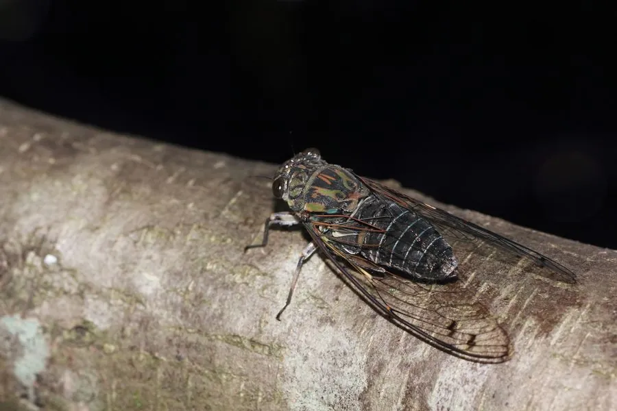

昆虫 · 动物界
松寒蝉 Meimuna opalifera

鸣声清亮、尾音带明显变化的寒蝉，常停在松树、柳树等枝头，是东亚夏秋常见的鸣虫，深受鸣虫爱好者喜爱。
- 分类
- 门节肢动物门纲昆虫纲目半翅目科蝉科属寒蝉属
- 栖息环境
- 松林、柳树林和阔叶林，成虫停在树枝上鸣叫和取食
- 地理分布
- 中国、日本和朝鲜半岛
- 保护级别
- 暂无评估
物种志
松寒蝉成虫体长 30–35 mm，体色灰绿带黑纹，翅透明，翅脉清晰；雄蝉的发音器发达，鸣声清亮而有节奏，结尾常变调，听起来像连续的口哨。
松寒蝉分布于中国、日本和朝鲜半岛，常见于松树、柳树和阔叶树上。若虫在土中生活，吸食树根汁液；成虫夏秋羽化，停在树枝上吸食汁液，雄蝉鸣叫求偶。它的鸣声是夏秋季节常见的自然声音，在黄昏和清晨尤为活跃。蝉鸣的音量很大，一只雄蝉的鸣声可以传出数十米。蝉的若虫期长达数年，而成虫期只有一个多月，因此蝉的大部分生命都在地下度过。目前它没有IUCN 的正式评估，中国未将其列入国家重点保护野生动物名录。
形态与习性
- 食性成虫和若虫吸食树木汁液
- 体长30–35 mm
- 鸣声清亮而有节奏，结尾变调
- 若虫在土中生活数年，吸食树根汁液
- 分布中国、日本和朝鲜半岛
- 成虫期夏秋羽化，成虫寿命约一个多月
趣味知识
- 松寒蝉的鸣声有节奏，结尾会明显变调，像连续的口哨。
- 它的若虫在地下生活数年，成虫期却只有一个多月。
- 蝉的翅膀薄而透明，翅脉结构给工程设计带来过启发。